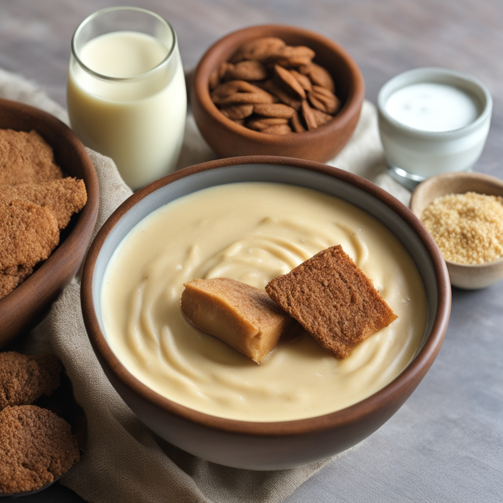

Colors
Natural and synthetic colors that improve product identity, appeal, and batch consistency.

Food colors are specialized additives used to enhance or restore the visual appeal of food, beverages, and nutraceutical products. They play a vital role in shaping consumer perception, improving product attractiveness, and maintaining consistent appearance across batches. Colors can be derived from natural sources such as fruits, vegetables, spices, and plant extracts, or produced synthetically to achieve stable and vibrant shades. They are widely used in confectionery, bakery, dairy, beverages, snacks, and dietary supplements to create eye-catching and uniform product presentation. In addition to aesthetic enhancement, colors also support brand identity and product differentiation in competitive markets. With rising demand for clean-label and natural ingredients, the use of natural colors has gained significant importance, enabling manufacturers to meet consumer expectations for both visual appeal and ingredient transparency.
Technical information, applications, and category guidance.
The tables below preserve the existing Mount Merchant product data while presenting it in a cleaner, more readable structure.
APPLICATIONS AND BENEFITS
| Sector | Applications | Benefits |
|---|---|---|
| Food | Bakery, confectionery, dairy, snacks, sauces | Enhances texture, improves fermentation, increases yield, improves flavor and shelf life |
| Nutraceuticals | Capsules, tablets, gummies, powder mixes | Enhances product appearance, improves consumer acceptance, supports brand differentiation |
| Beverages | Soft drinks, juices, energy drinks, flavored water | Provides vibrant and consistent color, improves consumer attractiveness |
| Cosmetics & Personal Care | Lip care, skincare, soaps, bath products | Enhances visual appeal, supports product aesthetics and brand identity |
| Pharmaceuticals | Tablets, capsules, syrups | Improves product identification, enhances consumer trust, supports dosage compliance |
| Confectionery & Snacks | Candies, chocolates, chips, biscuits | Provides vibrant and uniform color, improves shelf appeal, supports flavor perception |
| Frozen & Ready-to-Eat Foods | Ice creams, frozen desserts, ready meals | Maintains color stability during processing, improves product attractiveness |
KEY SPECIFICATIONS
| Parameter | Specifications |
|---|---|
| Appearance | Liquid (clear to colored) / Powder (free-flowing) |
| Taste & Odor | Neutral to mild (no significant taste) |
| Solubility | Water-soluble or oil-soluble (depending on type) |
| Moisture | <= 5.0% (for powdered colors) |
| Shelf Life | 12 - 24 months |
| Storage | Store in a cool, dry place away from direct sunlight and moisture; keep sealed |
NATURAL COLOR
| Natural color | Primary Role | Application/Industry |
|---|---|---|
| Beetroot Red | Vivid Red Colorant(Betalain) | Yogurts, Ice Cream, Fruit Fillings, Red Velvet Cake mixes, Beverages (to replace synthetic reds). |
| Tomato Colour (Lycopene) | Red-Orange Colorant & Antioxidant | Tomato-based sauces, Soups, Processed Meats, Nutraceutical supplements, and fortified beverages. |
| Turmeric Yellow (Curcumin) | Golden Yellow Colorant & WellnessAgent | Mustards, Curry powders, Cheeses, Baked Goods, Functional Drinks, and Dietary Supplements (for anti-inflammatory effects). |
| Spirulina Blue (Phycocyanin) | Vibrant Blue Colorant (Phycocyanin) | Confectionery, Frozen Desserts, Icing, Clean- label beverages (highly sought after for achieving blue/green shades naturally). |
| Annatto | Yellow-OrangeColorant (Bixin/Norbixin) | Cheeses (traditional “butter color”), Butter, Margarine, Breakfast Cereals, Dressings, and Snack Seasonings. |
| Paprika Red | Orange-Red Colorant & Flavor Note | Processed Meats (sausages, hot dogs), Snack Seasonings, Sauces, Coatings, and oil-based applications. |
ARTIFICIAL COLOR
| Color Additive | Primary Role | Application/Industry |
|---|---|---|
| Caramel Synthetic | Browning Agent (Provides cola brown, dark brown, or gold tones) | Soft Drinks (Colas), Sauces (Soy, BBQ), Beer, Baked Goods. |
| Red 40 (Allura Red) | Vivid Red Coloring (Creates bright red/cherry hues) | Confectionery (Candies, Gum), Soft Drinks, Gelatins, Cereals, Snack Foods. |
| Yellow 5 (Tartrazine) | Bright Yellow Coloring (Creates lemon/yellow-orange hues) | Beverages (Soft Drinks, Energy Drinks), Snack Foods (Chips), Baked Goods, Jams, Desserts. |
| Blue 1 (Brilliant Blue) | Sky Blue Coloring (Creates bright blue/turquoise hues) | Confectionery, Icings, Ice Cream, Popsicles, Baked Goods, Colored Drinks. |
| Green 3 (Fast Green) | True Green Coloring (Often used in combination to creategreens) | Mints, Icings, Ice Cream, Baked Goods, Cereals, Sherbets. |
| Orange B | Red/Orange Hue | Primarily used in the casings for processed meat products (e.g., hot dogs). |
| Red 2G | Cherry/Blood-Red Hue (Known for stability) | Limited/Banned in many regions (EU/UK) due to safety concerns; historically used in sausages and some meat preparations. |
| Black PN | Deep Black/Dark Color | Confectionery (Licorice), Desserts, Sauces, and certain drug coatings. |
Need this ingredient category for a formulation?
Send your target application, volume, and specification needs to begin a sourcing conversation.
Start inquiry